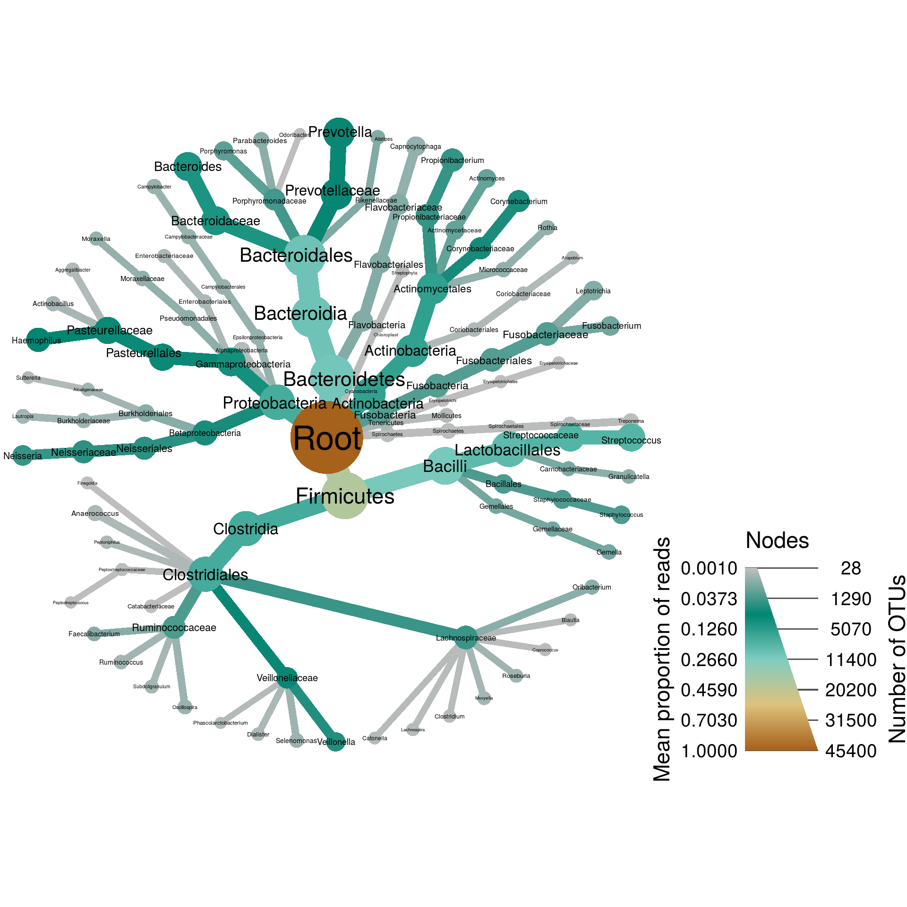
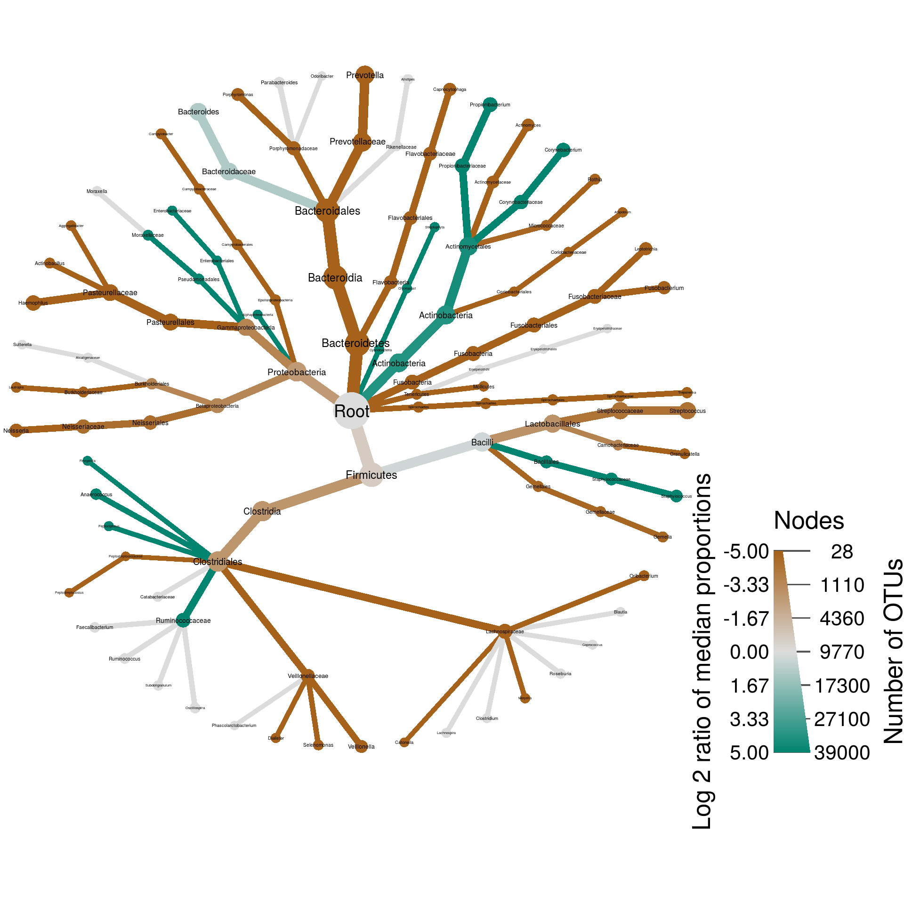
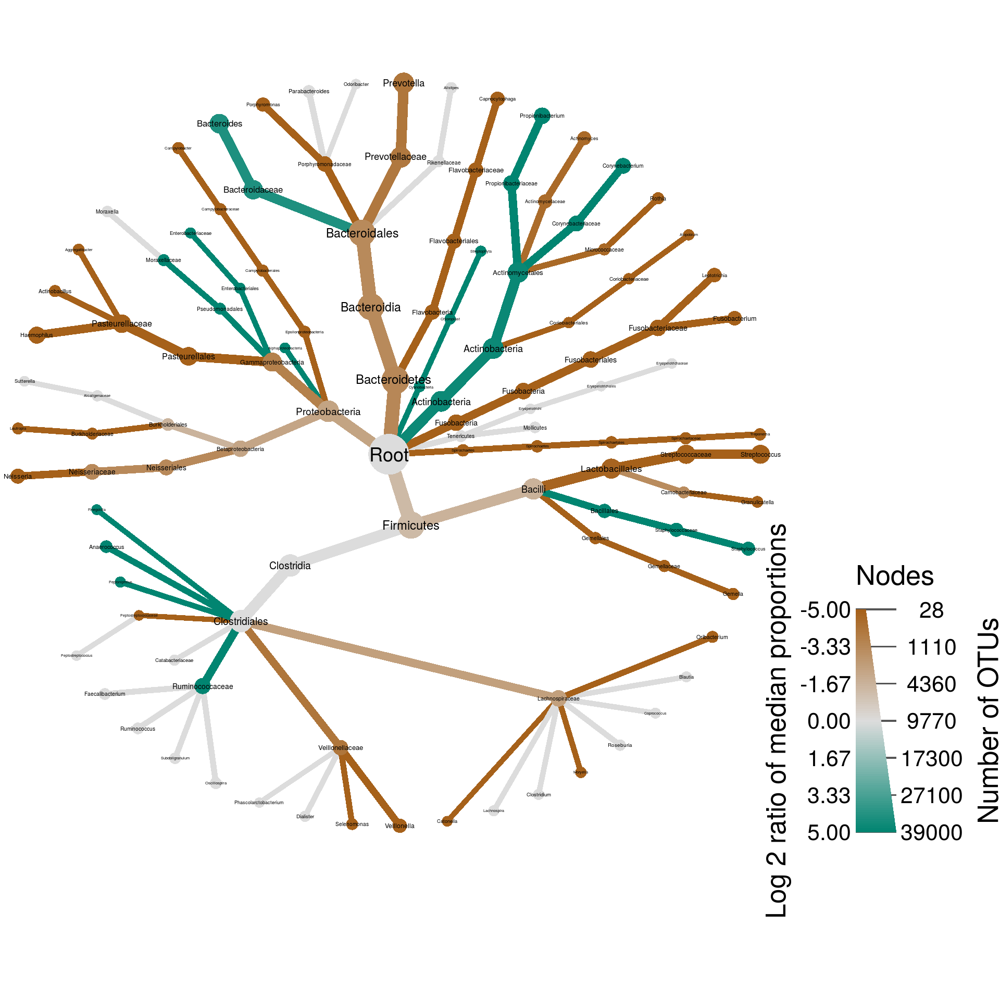

Human microbiome example
Requirements
NOTE: This analysis requires at least 10Gb of RAM to run. It uses large files not included in the repository and many steps can take a few minutes to run.
Parameters
Analysis input/output
input_folder <- "raw_input" # Where all the large input files are. Ignored by git.
output_folder <- "results" # Where plots will be saved
output_format <- "pdf" # The file format of saved plots
pub_fig_folder <- "publication"
revision_n <- 1
result_path <- function(name) {
file.path(output_folder, paste0(name, ".", output_format))
}
save_publication_fig <- function(name, figure_number) {
file.path(result_path(name), paste0("revision_", revision_n), paste0("figure_", figure_number, "--", name, ".", output_format))
}Analysis parameters
matrix_plot_depth <- 6 # The maximum number of ranks to display
color_interval <- c(-4, 4) # The range of values (log 2 ratio of median proportion) to display
min_read_count <- 100 # The minium number of reads needed for a taxon to be graphed
otu_file_url = "http://downloads.hmpdacc.org/data/HMQCP/otu_table_psn_v35.txt.gz"
mapping_file_url = "http://downloads.hmpdacc.org/data/HMQCP/v35_map_uniquebyPSN.txt.bz2"Downloading the data
This analysis used OTU abundance data from the Human Microbiome Project (HMP) (Consortium and others 2012), which used 16S metabarcoding to explore the bacterial microbiome of various human body parts. First we will download the files from the HMP website.
download_file <- function(path) {
temp_file_path <- file.path(tempdir(), basename(path))
utils::download.file(url = path, destfile = temp_file_path, quiet = TRUE)
path <- temp_file_path
return(path)
}
otu_file <- download_file(otu_file_url)
mapping_file <- download_file(mapping_file_url)Parsing the data
Then we will read these files into R and tidy up the data a bit. We will use the readr package to read these gloss$add("Tab-delimited text file", shown = "TSV") files.
library(readr)
otu_data <- read_tsv(otu_file, skip = 1) # Skip the first line, which is a comment## Parsed with column specification:
## cols(
## .default = col_double(),
## `#OTU ID` = col_character(),
## `Consensus Lineage` = col_character()
## )## See spec(...) for full column specifications.colnames(otu_data)[1] <- "otu_id" # make column name more R friendly
print(otu_data)## # A tibble: 45,383 x 4,790
## otu_id `700114607` `700114380` `700114716` `700114798` `700114710` `700114614` `700114755`
## <chr> <dbl> <dbl> <dbl> <dbl> <dbl> <dbl> <dbl>
## 1 OTU_97.1 0. 0. 0. 0. 0. 0. 0.
## 2 OTU_97.10 0. 0. 0. 0. 0. 0. 0.
## 3 OTU_97.100 0. 0. 0. 0. 0. 0. 0.
## 4 OTU_97.1000 0. 0. 0. 0. 0. 0. 0.
## 5 OTU_97.10000 0. 0. 0. 0. 0. 0. 0.
## 6 OTU_97.10001 0. 0. 0. 0. 0. 0. 0.
## 7 OTU_97.10002 0. 0. 0. 0. 0. 0. 0.
## 8 OTU_97.10003 0. 0. 0. 0. 0. 0. 0.
## 9 OTU_97.10004 0. 0. 0. 0. 0. 0. 0.
## 10 OTU_97.10005 0. 1. 5. 0. 0. 0. 0.
## # ... with 45,373 more rows, and 4,782 more variables: `700114715` <dbl>, `700114706` <dbl>,
## # `700114613` <dbl>, `700114803` <dbl>, `700114714` <dbl>, `700114482` <dbl>, `700114439` <dbl>,
## # `700114658` <dbl>, `700114387` <dbl>, `700114441` <dbl>, …
The last column “Consensus Lineage” contains the gloss$add("taxonomic classification"), so we will use that to convert the rest of the data into a taxmap object using the taxa package. Metacoder imports the taxa package, so we can just load it to access taxa’s parsers.
library(metacoder)Since this is tabular data with an embedded taxonomic classification, we use parse_tax_data:
hmp_data <- parse_tax_data(otu_data,
class_cols = "Consensus Lineage",
class_regex = "([a-z]{0,1})_{0,2}(.*)$",
class_key = c(hmp_rank = "taxon_rank", hmp_tax = "taxon_name"),
class_sep = ";")
hmp_data$data$class_data <- NULL # Delete uneeded regex match table
names(hmp_data$data) <- "otu_count" # Rename abundnace matrix to something more understandable
print(hmp_data)## <Taxmap>
## 985 taxa: aab. Root, aac. Firmicutes, aad. Proteobacteria ... blw. , blx. Dichelobacter
## 985 edges: NA->aab, aab->aac, aab->aad, aab->aae ... akc->blv, aqr->blw, amv->blx
## 1 data sets:
## otu_count:
## # A tibble: 45,383 x 4,791
## taxon_id otu_id `700114607` `700114380` `700114716` `700114798` `700114710`
## <chr> <chr> <dbl> <dbl> <dbl> <dbl> <dbl>
## 1 aqs OTU_97.1 0. 0. 0. 0. 0.
## 2 aqt OTU_97.10 0. 0. 0. 0. 0.
## 3 aqu OTU_97.100 0. 0. 0. 0. 0.
## # ... with 4.538e+04 more rows, and 4,784 more variables: `700114614` <dbl>,
## # `700114755` <dbl>, `700114715` <dbl>, `700114706` <dbl>, `700114613` <dbl>,
## # `700114803` <dbl>, `700114714` <dbl>, `700114482` <dbl>, `700114439` <dbl>,
## # `700114658` <dbl>, …
## 0 functions:
I will save the information on sample characteristics (e.g. body site) in a seperate table, since it is not directly assocaited with taxonomic information.
sample_data <- read_tsv(mapping_file,
col_types = "ccccccccc") # Force all columns to be character
colnames(sample_data) <- c("sample_id", "rsid", "visit_no", "sex", "run_center",
"body_site", "mislabeled", "contaminated", "description")
print(sample_data)## # A tibble: 4,857 x 9
## sample_id rsid visit_no sex run_center body_site mislabeled contaminated description
## <chr> <chr> <chr> <chr> <chr> <chr> <chr> <chr> <chr>
## 1 700013549 158013734 1 female BCM Stool NA NA HMP_Human_met…
## 2 700014386 158398106 1 male BCM,BI Stool NA NA HMP_Human_met…
## 3 700014403 158398106 1 male BCM,BI Saliva NA NA HMP_Human_met…
## 4 700014409 158398106 1 male BCM,BI Tongue_do… NA NA HMP_Human_met…
## 5 700014412 158398106 1 male BCM,BI Hard_pala… NA NA HMP_Human_met…
## 6 700014415 158398106 1 male BCM,BI Buccal_mu… NA NA HMP_Human_met…
## 7 700014418 158398106 1 male BCM,BI Attached_… NA NA HMP_Human_met…
## 8 700014421 158398106 1 male BCM,BI Palatine_… NA NA HMP_Human_met…
## 9 700014424 158398106 1 male BCM,BI Throat NA NA HMP_Human_met…
## 10 700014427 158398106 1 male BCM,BI Supraging… NA NA HMP_Human_met…
## # ... with 4,847 more rows
In this analysis, I will be looking at just a subset of the body sites, so I will subset the sample data to just those.
library(dplyr)##
## Attaching package: 'dplyr'## The following objects are masked from 'package:stats':
##
## filter, lag## The following objects are masked from 'package:base':
##
## intersect, setdiff, setequal, unionsites_to_compare <- c("Saliva", "Tongue_dorsum", "Buccal_mucosa", "Anterior_nares", "Stool")
sample_data <- filter(sample_data, body_site %in% sites_to_compare)Not all the samples in the sample data table appear in the abundance matrix and there are some in the abundance matrix that dont appear in the sample data and they are in a different order. Making the two correspond will probably make things easier later on. First, lets identify which columns they both share:
sample_names <- intersect(colnames(hmp_data$data$otu_count), sample_data$sample_id)We can then use match to order and subset the sample data based on the shared samples.
sample_data <- sample_data[match(sample_names, sample_data$sample_id), ]We can also subset the columns in the abundance matrix to just these shared samples. We also need to preserve the first two columns, the otu and taxon IDs.
hmp_data$data$otu_count <- hmp_data$data$otu_count[ , c("taxon_id", "otu_id", sample_names)]Filtering the taxonomy
Looking at the names of the taxa in the taxonomy, there are a lot of names that appear to be codes for uncharacterized taxa:
head(taxon_names(hmp_data), n = 20)## aab aac aad aae aaf
## "Root" "Firmicutes" "Proteobacteria" "Bacteroidetes" "Cyanobacteria"
## aag aah aai aaj aak
## "Actinobacteria" "Fusobacteria" "Tenericutes" "Spirochaetes" "Chloroflexi"
## aal aam aan aao aap
## "Thermi" "GN02" "Synergistetes" "Acidobacteria" "TM7"
## aaq aar aas aat aau
## "WPS-2" "Verrucomicrobia" "Planctomycetes" "Nitrospirae" "Lentisphaerae"
Those might be relevant depending on the research question, but for this analysis I choose to remove them, since they do not mean much to me (you might want to keep such taxa in your ananlysis). We can remove taxa from a taxmap object using the filter_taxa function from the taxa package. I will remove them by removing any taxon whose name is not composed of only letters.
hmp_data <- filter_taxa(hmp_data, grepl(taxon_names, pattern = "^[a-zA-Z]+$"))
print(hmp_data)## <Taxmap>
## 703 taxa: aab. Root, aac. Firmicutes ... blv. Planifilum, blx. Dichelobacter
## 703 edges: NA->aab, aab->aac, aab->aad, aab->aae ... adj->blt, akc->blv, amv->blx
## 1 data sets:
## otu_count:
## # A tibble: 45,383 x 1,508
## taxon_id otu_id `700114554` `700114707` `700114442` `700114328` `700114223`
## <chr> <chr> <dbl> <dbl> <dbl> <dbl> <dbl>
## 1 aqs OTU_97.1 0. 0. 0. 0. 0.
## 2 aqt OTU_97.10 0. 0. 0. 0. 0.
## 3 aqu OTU_97.100 0. 0. 0. 0. 0.
## # ... with 4.538e+04 more rows, and 1,501 more variables: `700111749` <dbl>,
## # `700114709` <dbl>, `700108534` <dbl>, `700114005` <dbl>, `700114162` <dbl>,
## # `700108165` <dbl>, `700114330` <dbl>, `700105883` <dbl>, `700114750` <dbl>,
## # `700114386` <dbl>, …
## 0 functions:
Note that we have not removed any OTUs even though there were OTUs assigned to those taxa. Those OTUs were automatically reassigned to a gloss$add("supertaxon") that was not filtered out. This also removed taxa with no name (""), since the + in the above regex means “one or more”.
Converting counts to proportions
We can now convert these counts to proportions and a simple alternative to rarefaction using calc_obs_props. This accounts for uneven numbers of sequences for each sample.
hmp_data$data$otu_prop <- calc_obs_props(hmp_data,
data = "otu_count",
cols = sample_data$sample_id)## Calculating proportions from counts for 1506 columns for 45383 observations.Calculating abundance per taxon
The input data included read abundance for each sample-OTU combination, but we need the abundances associated with each taxon for graphing. There will usually be multiple OTUs assigned to the same taxon, especailly for corase taxonomic ranks (e.g. the root will have all OTU indexes), so the abundances at those indexes are are summed to provide the total abundance for each taxon using the calc_taxon_abund function.
hmp_data$data$tax_prop <- calc_taxon_abund(hmp_data,
data = "otu_prop",
cols = sample_data$sample_id)## Summing per-taxon counts from 1506 columns for 703 taxaPlot of everything
To get an idea of how the data looks overall lets make a plot showing OTU and read abundance of all the data combined. I will exclude any taxon that has less than 100 reads.
set.seed(1)
plot_all <- hmp_data %>%
mutate_obs("tax_prop", abundance = rowMeans(hmp_data$data$tax_prop[sample_data$sample_id])) %>%
filter_taxa(abundance >= 0.001) %>%
filter_taxa(taxon_names != "") %>% # Some taxonomic levels are not named
heat_tree(node_size = n_obs,
node_size_range = c(0.01, 0.06),
node_size_axis_label = "Number of OTUs",
node_color = abundance,
node_color_axis_label = "Mean proportion of reads",
node_label = taxon_names,
output_file = result_path("hmp--all_data"))
print(plot_all)
Here we can see that there are realtively few abundant taxa and many rare ones. However, we dont know anything about the species level diversity since the classifications go to genus only.
Comparing taxon abundance amoung treatments
Assuming that differences in read depth correlates with differences in taxon abundance (a controversial assumption), we can compare taxon abundance amoung treatments using the compare_groups function. This function assumes you have multiple samples per treatment (i.e. group). It splits the counts up based on which group the samples came from and, for each row of the data (each taxon in this case), for each pair of groups (e.g. Nose vs Saliva samples), it applies a function to generate statistics summerizing the differences in abundance. You can create a custom function to return your own set of statistics, but the default is to do a Wilcoxon Rank Sum test on the differences in median abundance for the samples. See ?compare_groups for more details.
hmp_data$data$diff_table <- compare_groups(hmp_data,
data = "tax_prop",
cols = sample_data$sample_id,
groups = sample_data$body_site)We just did a lot (7030) of independent statistical tests, which means we probably got many false positives if we consider p < 0.05 to be significant. To fix this we need to do a correction for multiple comparisions to adjust the p-values. We will also set any differences that are not significant after the correction to 0, so that they do not show up when plotting.
hmp_data <- mutate_obs(hmp_data, "diff_table",
wilcox_p_value = p.adjust(wilcox_p_value, method = "fdr"),
log2_median_ratio = ifelse(wilcox_p_value < 0.05 | is.na(wilcox_p_value), log2_median_ratio, 0))Now we can make a what we call a “differential heat tree matrix”, to plot the results of these tests.
hmp_data %>%
mutate_obs("tax_prop", abundance = rowMeans(hmp_data$data$tax_prop[sample_data$sample_id])) %>%
filter_taxa(abundance >= 0.001, reassign_obs = c(diff_table = FALSE)) %>%
heat_tree_matrix(data = "diff_table",
node_size = n_obs,
node_size_range = c(0.01, 0.05),
node_label = taxon_names,
node_color = log2_median_ratio,
node_color_range = diverging_palette(),
node_color_trans = "linear",
node_color_interval = c(-7, 7),
edge_color_interval = c(-7, 7),
node_size_axis_label = "Number of OTUs",
node_color_axis_label = "Log2 ratio median proportions",
# initial_layout = "re",
# layout = "da",
key_size = 0.7,
seed = 4,
output_file = result_path("figure_3--hmp_matrix_plot"))
Plot body site differences
The HMP dataset is great for comparing treatments since there are many body sites with many replicates so statistical tests can be used to find correlations between body sites and taxon read abundance (the relationship between read abundance and organism abundance is more fuzzy and open to debate). The code below applies the Wilcox rank-sum test to differences in median read proportion between every pair of body sties compared. Since the data is compositional in nature (i.e. not idependent samples) we used a non-parametric test and used median instead of mean read proportion.
plot_body_site_diff <- function(site_1, site_2, output_name, seed = 1) {
set.seed(seed)
hmp_data %>%
mutate_obs("tax_prop", abundance = rowMeans(hmp_data$data$tax_prop[sample_data$sample_id])) %>%
filter_taxa(abundance >= 0.001, reassign_obs = FALSE) %>%
filter_taxa(taxon_names != "", reassign_obs = FALSE) %>% # Some taxonomic levels are not named
filter_obs("diff_table", treatment_1 %in% c(site_1, site_2), treatment_2 %in% c(site_1, site_2)) %>%
heat_tree(node_size_axis_label = "Number of OTUs",
node_size = n_obs,
node_color_axis_label = "Log 2 ratio of median proportions",
node_color = log2_median_ratio,
node_color_range = diverging_palette(),
node_color_trans = "linear",
node_color_interval = c(-5, 5),
edge_color_interval = c(-5, 5),
node_label = taxon_names,
output_file = result_path(paste0(output_name, "--", site_1, "_vs_", site_2)))
}plot_body_site_diff("Saliva", "Anterior_nares", "hmp--v35")
plot_body_site_diff("Buccal_mucosa", "Anterior_nares", "hmp--v35")
We call these types of graphs differential heat trees and they are great for comparing any type of data associated with two samples or treatments.
Software and packages used
sessionInfo()## R version 3.4.4 (2018-03-15)
## Platform: x86_64-pc-linux-gnu (64-bit)
## Running under: Ubuntu 16.04.4 LTS
##
## Matrix products: default
## BLAS: /usr/lib/libblas/libblas.so.3.6.0
## LAPACK: /usr/lib/lapack/liblapack.so.3.6.0
##
## locale:
## [1] LC_CTYPE=en_US.UTF-8 LC_NUMERIC=C LC_TIME=en_US.UTF-8
## [4] LC_COLLATE=en_US.UTF-8 LC_MONETARY=en_US.UTF-8 LC_MESSAGES=en_US.UTF-8
## [7] LC_PAPER=en_US.UTF-8 LC_NAME=C LC_ADDRESS=C
## [10] LC_TELEPHONE=C LC_MEASUREMENT=en_US.UTF-8 LC_IDENTIFICATION=C
##
## attached base packages:
## [1] stats graphics grDevices utils datasets methods base
##
## other attached packages:
## [1] bindrcpp_0.2.2 dplyr_0.7.8 metacoder_0.3.0.1 taxa_0.3.1
## [5] stringr_1.3.1 glossary_0.1.0 knitcitations_1.0.8 knitr_1.20
##
## loaded via a namespace (and not attached):
## [1] Rcpp_1.0.0 GA_3.1.1 compiler_3.4.4 pillar_1.3.0 plyr_1.8.4
## [6] bindr_0.1.1 iterators_1.0.10 tools_3.4.4 ggfittext_0.6.0 digest_0.6.18
## [11] gtable_0.2.0 lubridate_1.7.4 jsonlite_1.5 evaluate_0.12 tibble_1.4.2
## [16] pkgconfig_2.0.2 rlang_0.3.0.1 foreach_1.4.4 igraph_1.2.2 bibtex_0.4.2
## [21] cli_1.0.1 yaml_2.2.0 RefManageR_1.2.0 httr_1.3.1 xml2_1.2.0
## [26] hms_0.4.2 cowplot_0.9.3 grid_3.4.4 rprojroot_1.3-2 tidyselect_0.2.5
## [31] glue_1.3.0 R6_2.3.0 fansi_0.4.0 rmarkdown_1.10 reshape2_1.4.3
## [36] purrr_0.2.5 readr_1.1.1 ggplot2_3.1.0 magrittr_1.5 codetools_0.2-15
## [41] scales_1.0.0 backports_1.1.2 htmltools_0.3.6 assertthat_0.2.0 colorspace_1.3-2
## [46] labeling_0.3 utf8_1.1.4 stringi_1.2.4 lazyeval_0.2.1 munsell_0.5.0
## [51] crayon_1.3.4
References
Consortium, Human Microbiome Project, and others. 2012. “Structure, Function and Diversity of the Healthy Human Microbiome.” Nature 486 (7402). Nature Research: 207–14.